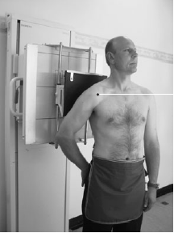

Scapula(AP)
Centering point:The horizontal ray is directed to the head of the humerus.

Cassette Size:24 x 30cm (10 x 12ins)Landscape
Exposure Factors:66kVp on
20MaS
FFD:100cm
Bucky/Grid:Moving or Stationary Grid
Filter:No
Pathologies:Fracture
Position of patient and cassette
- The patient stands with the affected shoulder against a cassette
and rotated slightly to bring the plane of the scapula
parallel with the cassette.
- The arm is slightly abducted away from the body and medially
rotated.
- The cassette is positioned so that its upper border is at least
5 cm above the shoulder to ensure that the oblique rays do
not project the shoulder off the cassette.